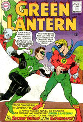

Green Lantern is one superhero character made by DC Comics. The Green Lantern's power comes from a power ring that gives its user special power over the physical world if they have the strength and willpower to do so. Each Green Lantern is part of an intergalactic police force called the Green Lantern Corps. Only the strongest are chosen by The Guardians of the Universe, the creators of the many power rings. Each of Earth's Green Lanterns has been a member of the Justice League of America, the DC Comics' superhero team that protected America from crime and other villains.
Created by Martin Nodell and Bill Finger, the Green Lantern's first appearance was in 1940 published by All-American Publications before it merged into DC Comics. Green Lantern, whose name was Alan Scott during this time, was very popular in the Golden Age but faded after World War Two like the rest of superhero comics.
 Green Lantern was revived in the late 1950s with a new character and origin story. This generation's Green Lantern was written by John Broome and drawn by Gil Kane. The Silver Age Green Lantern, Hal Jordan, is probably the most well-known and popular. One issue had Hal Jordan and Alan Scott meet and compete for the position of Green Lantern of Earth.
In the 1970s, DC Comics' editor added the character Green Arrow to the Green Lantern comics and had them travel together. While travelling, they encountered many real-world issues (as the Bronze Age suggests) and reacted to them in different ways; Green Lantern playing the lawman and Green Arrow being harsh and critical. However, this combination was not very successful and was soon cancelled. Green Lantern comics endured several revivals and cancellations during this time as well.